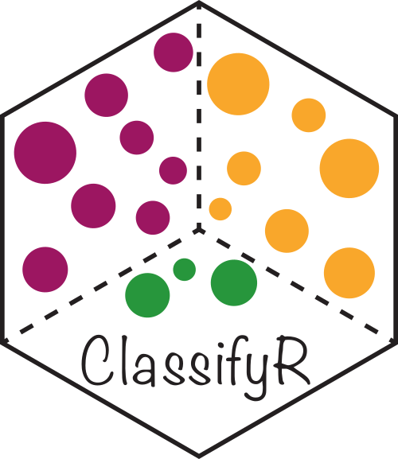
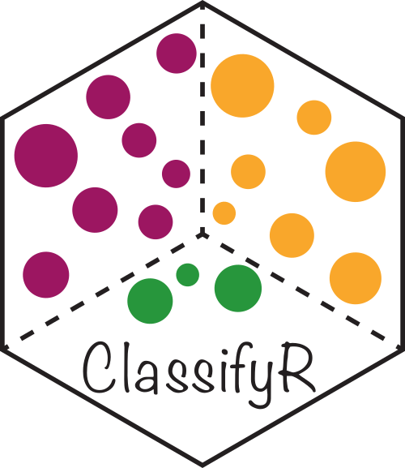
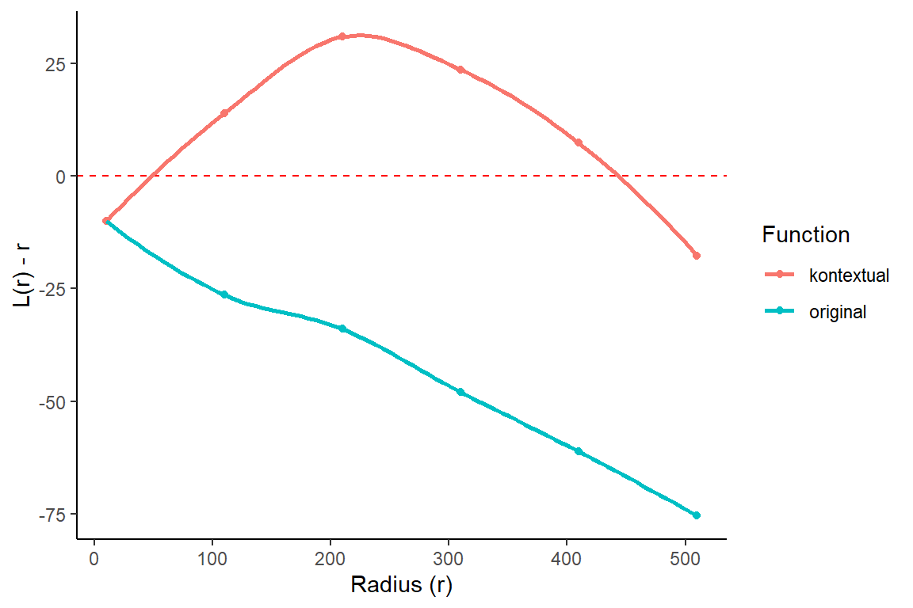

if (!requireNamespace("BiocManager", quietly = TRUE)) {
install.packages("BiocManager")
}
BiocManager::install(c("Statial", "spicyR", "lisaClust", "ClassifyR", "ggplot2", "SpatialExperiment", "dplyr",
"tidyr", "ggsurvfit", "scater", "rappdirs"))Triple Negative Breast Cancer
Description
Statial is a Bioconductor package which contains a suite of complementary approaches for identifying changes in cell state and how these changes are associated with cell type localisation. The following will introduce functionality in the Statial package which can:
- Model spatial relationships between cells in the context of hierarchical cell lineage structures
- Uncover changes in marker expression associated with cell proximities
- Identify changes in cell state between distinct tissue environments
Pre-requisites
It is expected that you will have:
- Basic knowledge of R syntax
- Familiarity with SingleCellExperiment and/or SpatialExperiment objects
R / Bioconductor packages used
The following will focus on the functionality of Statial, it will tangentially touch on other Bioconductor packages we have developed for these technologies such as spicyR, lisaClust and ClassifyR.

 

Goals and objectives
Learning goals
- Identify methods which align with spatial hypotheses of interest.
- Understand the difference between the approaches and when they will be appropriate.
- Appreciate the limitations of the different approaches and when they will be uninformative.
Learning objectives
- Apply functions to identify various types of changes in cell state.
- Interpret output from tests and quantifications.
- Evaluate the appropriateness of different analytical approaches.
- Assess the performance of classification approaches that utilise cell state features.
Installation
Load packages
library(StatialBioc2023)
library(Statial)
library(spicyR)
library(lisaClust)
library(ClassifyR)
library(ggplot2)
library(SpatialExperiment)
library(dplyr)
library(tidyr)
library(ggsurvfit)
library(scater)
library(rappdirs)
theme_set(theme_classic())
nCores <- 1 # Feel free to parallelise things if you have the cores to spare.The definitions of cell types and cell states are somewhat ambiguous. We will purposefully skirt the debate of what is a cell type vs cell state. Instead, in this workshop I would ask participants to associate cell state terminology to simply mean a varying phenotype (state) of a large cluster of similar cells (cell type). In this workshop we will examine two analytically distinct changes in cell state:
-
A discrete change in state. Cell types (clusters of cells) are further clustered into sub-clusters. These finer-resolution phenotypes of the cell type are labelled as cell states.
- A continuous change in state. The state of a cell type is defined by variation in abundance of a gene or protein.
The data
To illustrate the functionality of Statial we will use a multiplexed ion beam imaging by time-of-flight (MIBI-TOF) dataset profiling tissue from triple-negative breast cancer patients\(^1\). This dataset simultaneously quantifies in situ expression of 36 proteins in 34 immune rich patients. Note: The data contains some “uninformative” probes and the original cohort included 41 patients.
The data is stored in a SpatialExperiment object called spe_Keren_2018. We can load the data and view some basic characteristics.
cache <- user_cache_dir()
url <- "https://www.maths.usyd.edu.au/u/ellisp/SpatialDatasets/spe_Keren_2018.rds"
path <- file.path(cache, "spe_Keren_2018.rds")
if(!file.exists(path)) {
download.file(url=url, destfile=path)
}
# Read in data
spe_Keren_2018 <- readRDS(path)
# Store spatialCoords as a reducedDim for more plotting.
reducedDim(spe_Keren_2018, "spatialCoords") <- spatialCoords(spe_Keren_2018)
# Add spatialCoords to colData also for plotting.
colData(spe_Keren_2018) <- cbind(colData(spe_Keren_2018), spatialCoords(spe_Keren_2018))
# Filter out samples with few immune cells and those without survival information.
spe_Keren_2018 <- spe_Keren_2018[,spe_Keren_2018$tumour_type!="cold" & !is.na(spe_Keren_2018$`Survival_days_capped*`)]
spe_Keren_2018class: SpatialExperiment
dim: 48 170171
metadata(0):
assays(1): intensities
rownames(48): Na Si ... Ta Au
rowData names(0):
colnames(170171): 1 2 ... 197677 197678
colData names(42): CellID imageID ... x y
reducedDimNames(1): spatialCoords
mainExpName: NULL
altExpNames(0):
spatialCoords names(2) : x y
imgData names(1): sample_idAs our data is stored in a SpatialExperiment, with the spatialCoords also stored as a reducedDim, we can use scater to visualise our data in a lower dimensional embedding and look for image or cluster differences.
# Perform dimension reduction using UMAP.
# I have already run this and saved it in spe_Keren_2018 so that you can save time.
#
set.seed(51773)
spe_Keren_2018 <- scater::runUMAP(spe_Keren_2018, exprs_values = "intensities", name = "UMAP")
# UMAP by imageID.
scater::plotReducedDim(spe_Keren_2018, dimred = "UMAP", colour_by = "cellType")Question
- What does this UMAP tell us?
- What are some observations we could make if we coloured by
imageID?
Identifying discrete changes in cell state with Kontextual
Cells states can be modelled as subclusters of a broader parent cell population. These subclusters, or states, are typically identified via a hierarchical clustering strategy. By framing cell states as discrete clusters, we are able to explore relationships as follows - cell type A has two states, with state 2 being closer to cell type B.

Here we introduce Kontextual. Kontextual models spatial relationships between cells in the context of hierarchical cell lineage structures. By assessing spatial relationships between pairs of cells in the context of other related cell types, Kontextual provides robust quantification of cell type relationships which are invariant to changes in tissue structure.

For the purposes of using Kontextual we treat cell states as identified clusters of cells, where larger clusters represent a “parent” cell population, and finer sub-clusters representing a “child” cell population. For example a CD4+ T cell may be considered a child to a larger parent population of T cells. Kontextual thus aims to quantify how the localisation patterns of a child population of cells deviate from the spatial behaviour of their parent population, and how that influences the localisation between the child cell state and another cell state.
Cell type hierarchy
A key input for Kontextual is an annotation of cell type hierarchies. We will need these to organise all the cells present into cell state populations or clusters, e.g. all the different B cell types are put in a vector called bcells.
To make our lives easier, we will start by defining these here. I’m happy to talk about how we use our bioconductor package treekoR to define these hierarchies in a data driven way.
# Set up cell populations
tumour <- c("Keratin_Tumour", "Tumour")
bcells <- c("B_cell")
tcells <- c("dn_T_cell", "CD4_T_cell", "CD8_T_cell", "Tregs")
myeloid <- c("Dc_or_Mono", "DC", "Mono_or_Neu", "Macrophages", "Other_Immune", "Neutrophils")
endothelial <- c("Endothelial")
mesenchymal <- c("Mesenchymal")
tissue <- c(endothelial, mesenchymal)
immune <- c(bcells, tcells, myeloid, "NK")
all <- c(tumour, tissue, immune, "Unidentified")Discrete cell state changes within a single image
Here we examine an image highlighted in the Keren et al. 2018 manuscript where the relationship between two cell types depends on a parent cell population. In image 6 of the Keren et al. dataset, we can see that p53+ tumour cells and immune cells are dispersed. However when the behaviour of p53+ tumour cells are placed in the context of the spatial behaviour of its broader parent population tumour cells, p53+ tumour cells and immune would appear localised.
# Lets define a new cell type vector
spe_Keren_2018$cellTypeNew <- spe_Keren_2018$cellType
# Select for all cells that express higher than baseline level of p53
p53Pos = assay(spe_Keren_2018)["p53",] > -0.300460
# Find p53+ tumour cells
spe_Keren_2018$cellTypeNew[spe_Keren_2018$cellType %in% tumour] <- "Tumour"
spe_Keren_2018$cellTypeNew[p53Pos & spe_Keren_2018$cellType %in% tumour] <- "p53_Tumour"
#Group all immune cells under the name "Immune"
spe_Keren_2018$cellTypeNew[spe_Keren_2018$cellType %in% immune] <- "Immune"
# Add spatialCoords as a reduced dimension
# Plot image 6
spe_Keren_2018 |>
colData() |>
as.data.frame() |>
filter(imageID == "6") |>
filter(cellTypeNew %in% c("Immune", "Tumour", "p53_Tumour")) |>
arrange(cellTypeNew) |>
ggplot(aes(x = x, y = y, color = cellTypeNew)) +
geom_point(size = 1) +
scale_colour_manual(values = c("#505050", "#64BC46","#D6D6D6")) + guides(colour = guide_legend(title = "Cell types", override.aes = list(size=3)))The Kontextual function accepts a SingleCellExperiment object, or a single image, or list of images from a SingleCellExperiment object, this gets passed into the cells argument. The two cell types which will be evaluated are specified in the to and from arguments. A parent population must also be specified in the parent argument, note the parent cell population must include the to cell type. The argument r will specify the radius which the cell relationship will be evaluated on. Kontextual supports parallel processing, the number of cores can be specified using the cores argument. Kontextual can take a single value or multiple values for each argument and will test all combinations of the arguments specified.
We can calculate these relationships for a single radius.
p53_Kontextual <- Kontextual(
cells = spe_Keren_2018,
image = 6,
r = 50,
from = "p53_Tumour",
to = "Immune",
parent = c("p53", "Tumour"),
cellType = "cellTypeNew"
)
p53_Kontextual imageID test original kontextual r weightQuantile inhom edge
1 6 p53_Tumour__Immune -21.35601 54.9888 50 0.8 TRUE FALSE
includeZeroCells window window.length
1 TRUE convex NAThe kontextCurve calculates the L-function value and Kontextual values over a range of radii. While kontextPlot plots these values. If the points lie above the red line (expected pattern) then localisation is indicated for that radius, if the points lie below the red line then dispersion is indicated. As seen in the following plot Kontextual is able to correctly identify localisation between p53+ tumour cells and immune cells in the example image for a certain range of radii. The original L-function is not able to identify localisation at any value of radii.
curves <- kontextCurve(
cells = spe_Keren_2018,
image = "6",
from = "p53_Tumour",
to = "Immune",
parent = c("p53+Tumour", "Tumour"),
rs = seq(10, 510, 100),
cellType = "cellTypeNew",
cores = nCores
)
kontextPlot(curves)
Alternatively all pairwise cell relationships and their corresponding parents in the dataset can be tested. A data frame with all pairwise combinations can be creating using the parentCombinations function. This function takes in a vector of all the cells, as well as all the parent vectors set up earlier. As shown below the output is a data frame specifying the to, from, and parent arguments for Kontextual.
# Get all relationships between cell types and their parents
parentDf <- parentCombinations(
all = all,
tumour,
bcells,
tcells,
myeloid,
endothelial,
mesenchymal,
tissue,
immune
)Discrete cell state changes across all images
Rather than specifying to, from, and parent in Kontextual, the output from parentCombinations can be input into Kontextual using the parentDf argument, to examine all pairwise relationships in the dataset. This chunk will take a signficant amount of time to run (~20 minutes).
# Running Kontextual on all relationships across all images.
kerenKontextual <- Kontextual(
cells = spe_Keren_2018,
parentDf = parentDf,
r = 50,
cores = nCores
)bigDiff <- (kerenKontextual$original - kerenKontextual$kontextual)
head(kerenKontextual[order(bigDiff),], 10) imageID test original kontextual r
14846 5 Tumour__Endothelial__tumour -22.329210 181.6454 50
14968 32 Tumour__CD4_T_cell__tumour 37.890443 226.8310 50
14902 32 Tumour__B_cell__tumour 71.070831 239.4044 50
15193 23 Tumour__Other_Immune__tumour 102.570063 265.9990 50
6879 28 Tregs__Keratin_Tumour__immune -9.816640 146.5256 50
12687 28 Tregs__Keratin_Tumour__tcells -9.816640 141.6986 50
4767 28 Mono_or_Neu__Keratin_Tumour__immune -1.959462 149.2250 50
15143 5 Tumour__Mono_or_Neu__tumour -8.341033 126.4892 50
10058 4 Neutrophils__Keratin_Tumour__myeloid -7.267981 114.3391 50
5306 4 Neutrophils__Keratin_Tumour__immune -7.267981 111.0288 50
weightQuantile inhom edge includeZeroCells window window.length
14846 0.8 TRUE FALSE TRUE convex NA
14968 0.8 TRUE FALSE TRUE convex NA
14902 0.8 TRUE FALSE TRUE convex NA
15193 0.8 TRUE FALSE TRUE convex NA
6879 0.8 TRUE FALSE TRUE convex NA
12687 0.8 TRUE FALSE TRUE convex NA
4767 0.8 TRUE FALSE TRUE convex NA
15143 0.8 TRUE FALSE TRUE convex NA
10058 0.8 TRUE FALSE TRUE convex NA
5306 0.8 TRUE FALSE TRUE convex NAAssociate discrete state changes with survival outcomes
To examine whether the features obtained from Statial are associated with patient outcomes or groupings, we can use the colTest function from SpicyR. To understand if survival outcomes differ significantly between 2 patient groups, specify type = "survival" in colTest. Here we examine which features are most associated with patient survival using the Kontextual values as an example. To do so, survival data is extracted from spe_Keren_2018 and converted into the survival object kerenSurv.
# Extracting survival data
survData = spe_Keren_2018 |>
colData() |>
data.frame() |>
select(imageID, Survival_days_capped., Censored) |>
unique()
# Creating survival vector
kerenSurv = Surv(survData$Survival_days_capped, survData$Censored)
names(kerenSurv) = survData$imageIDIn addition to this, the Kontextual results must be converted from a data.frame to a wide matrix, this can be done using prepMatrix. Note, to extract the original L-function values, specify column = "original" in prepMatrix.
# Converting Kontextual result into data matrix
kontextMat = prepMatrix(kerenKontextual)
# Ensuring rownames of kontextMat match up with rownames of the survival vector
kontextMat = kontextMat[names(kerenSurv), ]
# Replace NAs with 0
kontextMat[is.na(kontextMat )] <- 0Finally, both the Kontextual matrix and survival object are passed into colTest, with type = "survival" to obtain the survival results.
# Running survival analysis
survivalResults = spicyR::colTest(kontextMat, kerenSurv, type = "survival")
head(survivalResults) coef se.coef pval adjPval
Mesenchymal__Macrophages__tissue -0.130 0.0340 0.00017 0.06
Endothelial__Mono_or_Neu__tissue -0.035 0.0110 0.00110 0.18
Mesenchymal__Other_Immune__tissue 0.068 0.0220 0.00230 0.18
Tumour__CD4_T_cell__tumour 0.011 0.0036 0.00320 0.18
Mesenchymal__Macrophages__mesenchymal -0.120 0.0410 0.00350 0.18
CD4_T_cell__CD8_T_cell__tcells 0.250 0.0850 0.00360 0.18
cluster
Mesenchymal__Macrophages__tissue Mesenchymal__Macrophages__tissue
Endothelial__Mono_or_Neu__tissue Endothelial__Mono_or_Neu__tissue
Mesenchymal__Other_Immune__tissue Mesenchymal__Other_Immune__tissue
Tumour__CD4_T_cell__tumour Tumour__CD4_T_cell__tumour
Mesenchymal__Macrophages__mesenchymal Mesenchymal__Macrophages__mesenchymal
CD4_T_cell__CD8_T_cell__tcells CD4_T_cell__CD8_T_cell__tcellsAs we can see from the results Mesenchymal__Macrophages__tissue is the most significant pairwise relationship which contributes to patient survival. That is the relationship between Mesenchymal cells and macrophage cells, relative to the parent population of all tissue cells. We can see that there is a negative coefficient associated with this relationship, which tells us a decrease in localisation of Mesenchymal and Macrophages leads to poorer survival outcomes for patients.
The association between Mesenchymal__Macrophages__tissue and survival can also be visualised on a Kaplan-Meier curve. We must first extract the Kontextual values of this relationship across all images. Next we determine if Mesenchymal and Macrophages are relatively attracted or avoiding in each image, by comparing the Kontextual value in each image to the median Kontextual value. Finally we plot the Kaplan-Meier curve using the ggsurvfit package.
As shown below, when Mesenchymal and Macrophages are relatively more dispersed to one another, patients tend to have worse survival outcomes.
# Selecting most significant relationship
survRelationship = kontextMat[["Mesenchymal__Macrophages__tissue"]]
survRelationship = ifelse(survRelationship > median(survRelationship), "Localised", "Dispersed")
# Plotting Kaplan-Meier curve
survfit2(kerenSurv ~ survRelationship) |>
ggsurvfit() +
add_pvalue() +
ggtitle("Mesenchymal__Macrophages__tissue")Identifying continuous changes in cell state
Changes in cell states can be analytically framed as the change in abundance of a gene or protein within a particular cell type. We can analytically determine whether continuous changes occur to a cell’s state as changes occur in its spatial proximity to another cell type. In the figures below we see the expression of a marker increased in cell type A as it grows closer in spatial proximity to cell type B. This can then be quantified with a scatterplot to determine statistical significance. In the next section of this workshop, we will be exploring the analytical functionalities of Statial which can uncover these continuous changes in cell state.

Continuous cell state changes within a single image.
The first step in analysing these changes is to calculate the spatial proximity (getDistances) and abundance (getAbundances) of each cell to every cell type. These values will then be stored in the reducedDims slot of the SpatialExperiment object under the names distances and abundances respectively.
spe_Keren_2018 <- getDistances(spe_Keren_2018,
maxDist = 200)
spe_Keren_2018 <- getAbundances(spe_Keren_2018,
r = 50)First, let’s examine the same effect observed earlier with Kontextual. To avoid redefining cell types we’ll examine the distance between p53-positive tumour cells and macrophages in the context of total keratin/tumour cells for image 6.
Statial provides two main functions to assess this relationship - calcStateChanges and plotStateChanges. We can use calcStateChanges to examine the relationship between 2 cell types for 1 marker in a specific image. Similar to Kontextual, we can specify the two cell types with the to and from arguments, and the marker of interest with the marker argument. We can appreciate that the fdr statistic for this relationship is significant, and with a negative coef, or coefficient value, indicating that the expression of p53 in keratin/tumour cells decreases as distance from macrophages increases.
stateChanges <- calcStateChanges(
cells = spe_Keren_2018,
type = "distances",
image = "6",
from = "Keratin_Tumour",
to = "Macrophages",
marker = "p53")
stateChanges imageID primaryCellType otherCellType marker coef tval
1 6 Keratin_Tumour Macrophages p53 -0.001402178 -7.010113
pval fdr
1 2.868257e-12 2.868257e-12Statial provides a convenient function for visualising this relationship - plotStateChanges. Similar to Kontextual and calcStateChanges, we can specify the cell types to be evaluated with the to and from arguments and the marker of interest with marker.
Through this analysis, we can observe that keratin/tumour cells closer to a group of macrophages tend to have higher expression of p53, as observed in the first graph. This relationship is quantified with the second graph, showing an overall decrease of p53 expression in keratin/tumour cells as distance to macrophages increase.
These results allow us to essentially arrive at the same result as Kontextual, which calculated a localisation between p53+ keratin/tumour cells and macrophages in the wider context of keratin/tumour cells.
p <- plotStateChanges(
cells = spe_Keren_2018,
type = "distances",
image = "6",
from = "Keratin_Tumour",
to = "Macrophages",
marker = "p53",
size = 1,
shape = 19,
interactive = FALSE,
plotModelFit = FALSE,
method = "lm")
p$image +
labs(y = "p53 expression in Keratin_Tumour",
x = "Distance of Keratin_Tumour to Macrophages")p$scatter`geom_smooth()` using formula = 'y ~ x'Question
- What information does this form of analysis provide that Kontextual does not?
- Is this observation of localisation consistent across images?
- Can you find an interaction where the coefficient is positive? i.e. marker expression in the
tocell type rises as distances increases from thefromcell type.
Continuous cell state changes across all images.
Beyond looking at single cell-to-cell interactions for a single image, we can also look at all interactions across all images. The calcStateChanges function provided by Statial can be expanded for this exact purpose - by not specifying cell types, a marker, or an image, calcStateChanges will examine the most significant correlations between distance and marker expression across the entire dataset. Here, we’ve calculated all state changes across all images in case you would like to have a play, but first we’ll be taking a closer examination at the most significant interactions found within image 6 of the Keren et al. dataset.
stateChanges <- calcStateChanges(
cells = spe_Keren_2018,
type = "distances",
minCells = 100)
stateChanges |>
filter(imageID == 6) |>
head(n = 10) imageID primaryCellType otherCellType marker coef tval
1 6 Keratin_Tumour Unidentified Na 0.004218419 25.03039
2 6 Keratin_Tumour Macrophages HLA_Class_1 -0.003823497 -24.69629
3 6 Keratin_Tumour CD4_T_cell HLA_Class_1 -0.003582774 -23.87797
4 6 Keratin_Tumour Unidentified Beta.catenin 0.005893120 23.41953
5 6 Keratin_Tumour CD8_T_cell HLA_Class_1 -0.003154544 -23.13804
6 6 Keratin_Tumour DC_or_Mono HLA_Class_1 -0.003353834 -22.98944
7 6 Keratin_Tumour dn_T_CD3 HLA_Class_1 -0.003123446 -22.63197
8 6 Keratin_Tumour Tumour HLA_Class_1 0.003684079 21.94265
9 6 Keratin_Tumour CD4_T_cell Fe -0.003457338 -21.43550
10 6 Keratin_Tumour CD4_T_cell phospho.S6 -0.002892457 -20.50767
pval fdr
1 6.971648e-127 3.391688e-123
2 7.814253e-124 3.421451e-120
3 1.745242e-116 5.660370e-113
4 1.917245e-112 5.789387e-109
5 5.444541e-110 1.513574e-106
6 1.053130e-108 2.837601e-105
7 1.237988e-105 3.011388e-102
8 8.188258e-100 1.707242e-96
9 1.287478e-95 2.348829e-92
10 3.928912e-88 5.881245e-85In image 6, the majority of the top 10 most significant interactions occur between keratin/tumour cells and an immune population, and many of these interactions appear to involve the HLA class I ligand.
We can examine some of these interactions further with the plotStateChanges function. Taking a closer examination of the relationship between macrophages and keratin/tumour HLA class I expression, the plot below shows us a clear visual correlation - as macrophage density increases, keratin/tumour cells increase their expression HLA class I.
Biologically, HLA Class I is a ligand which exists on all nucleated cells, tasked with presenting internal cell antigens for recognition by the immune system, marking aberrant cells for destruction by either CD8+ T cells or NK cells.
p <- plotStateChanges(
cells = spe_Keren_2018,
type = "distances",
image = "6",
from = "Keratin_Tumour",
to = "Macrophages",
marker = "HLA_Class_1",
size = 1,
shape = 19,
interactive = FALSE,
plotModelFit = FALSE,
method = "lm")
p$image +
labs(y = "HLA_Class_1 expression in Keratin_Tumour",
x = "Distance of Keratin_Tumour to Macrophages")p$scatter`geom_smooth()` using formula = 'y ~ x'Warning: Removed 1359 rows containing non-finite values (`stat_smooth()`).Warning: Removed 1359 rows containing missing values (`geom_point()`).Now, we can take a look at the top 10 most significant results across all images.
stateChanges |> head(n = 10) imageID primaryCellType otherCellType marker coef
69468 37 Endothelial Tumour Lag3 -0.001621517
144255 11 Neutrophils NK CD56 -0.059936866
16402 35 CD4_T_cell B_cell CD20 -0.029185750
16498 35 CD4_T_cell DC_or_Mono CD20 0.019125946
4891 35 B_cell DC_or_Mono phospho.S6 0.005282065
16507 35 CD4_T_cell DC_or_Mono phospho.S6 0.004033218
4885 35 B_cell DC_or_Mono HLA.DR 0.011120703
5043 35 B_cell Other_Immune P 0.011182182
16354 35 CD4_T_cell dn_T_CD3 CD20 0.016349492
4888 35 B_cell DC_or_Mono H3K9ac 0.005096632
tval pval fdr
69468 -1.334186e+14 0.000000e+00 0.000000e+00
144255 -1.405002e+14 0.000000e+00 0.000000e+00
16402 -4.057355e+01 7.019343e-282 4.097869e-277
16498 4.053436e+01 1.891267e-281 8.280867e-277
4891 4.041385e+01 5.306590e-278 1.858782e-273
16507 3.472882e+01 4.519947e-219 1.319365e-214
4885 3.415344e+01 8.401034e-212 2.101927e-207
5043 3.414375e+01 1.056403e-211 2.312717e-207
16354 3.391901e+01 1.219488e-210 2.373110e-206
4888 3.399856e+01 3.266533e-210 5.720973e-206Immediately, we can appreciate that a couple of interactions appear a bit strange. One of the most significant interactions occurs between B cells and CD4 T cells, where CD4 T cells are found to increase in CD20 expression when in close proximity to B cells. Biologically, CD20 is a highly specific ligand for B cells, and under healthy circumstances are usually not expressed in T cells.
Could this potentially be an artefact of calcStateChanges? We can examine the image through the plotStateChanges function, where we indeed observe an apparent localisation between B cells and T cells.
Question
Are there any other interactions here that you think might not make biological sense?
Does the relationship between T cell CD20 expression and B cell proximity occur across images?
-
Why are the majority of most significant interactions occurring in image 35?
HINT: Configure the parameters of
plotStateChangesto examine some these other significant interactions. Do they look like artefacts?
p <- plotStateChanges(
cells = spe_Keren_2018,
type = "distances",
image = "35",
from = "CD4_T_cell",
to = "B_cell",
marker = "CD20",
size = 1,
shape = 19,
interactive = FALSE,
plotModelFit = FALSE,
method = "lm")
p$image +
labs(y = "CD20 expression in CD4_T_cell",
x = "Distance of B_cell to CD4_T_cell")p$scatter`geom_smooth()` using formula = 'y ~ x'Warning: Removed 26 rows containing missing values (`geom_smooth()`).So why are T cells expressing CD20? This brings us to a key limitation of cell segmentation.
Contamination (Lateral marker spill over)
Contamination, or more specifically known as lateral marker spill over, is an issue that results in a cell’s marker expressions being wrongly attributed to another adjacent cell. This issue arises from incorrect segmentation where components of one cell are wrongly determined as belonging to another cell. Alternatively, this issue can arise when antibodies used to tag and measure marker expressions do not latch on properly to a cell of interest, thereby resulting in residual markers being wrongly assigned as belonging to a cell near the intended target cell. It is important that we either correct or account for this incorrect attribution of markers in our modelling process. This is critical in understanding whether significant cell-cell interactions detected are an artifact of technical measurement errors driven by spill over or are real biological changes that represent a shift in a cell’s state.

To circumvent this problem, Statial provides a function that predicts the probability that a cell is any particular cell type - calcContamination. calcContamination returns a dataframe of probabilities demarcating the chance of a cell being any particular cell type. This dataframe is stored under contaminations in the reducedDim slot of the SpatialExperiment object. It also provides the rfMainCellProb column, which provides the probability that a cell is indeed the cell type it has been designated. E.g. For a cell designated as a CD8+ T cell, rfMainCellProb could give a 80% chance that the cell is indeed CD8+ T cell, due to contamination.
We can then introduce these probabilities as covariates into our linear model by setting contamination = TRUE as a parameter in our calcStateChanges function. However, this is not a perfect solution for the issue of contamination. As we can see, despite factoring in contamination into our linear model, the correlation between B cell density and CD20 expression in CD4+ T cells remains one of the most significant interactions in our model.
spe_Keren_2018 <- calcContamination(spe_Keren_2018)Growing trees.. Progress: 32%. Estimated remaining time: 1 minute, 5 seconds.
Growing trees.. Progress: 68%. Estimated remaining time: 29 seconds.stateChangesCorrected <- calcStateChanges(
cells = spe_Keren_2018,
type = "distances",
minCells = 100,
contamination = TRUE)
stateChangesCorrected |> head(n = 20) imageID primaryCellType otherCellType marker coef
69468 37 Endothelial Tumour Lag3 -0.001621517
144255 11 Neutrophils NK CD56 -0.059936866
16402 35 CD4_T_cell B_cell CD20 -0.025132928
16498 35 CD4_T_cell DC_or_Mono CD20 0.016143319
16354 35 CD4_T_cell dn_T_CD3 CD20 0.013763574
16507 35 CD4_T_cell DC_or_Mono phospho.S6 0.003605343
4891 35 B_cell DC_or_Mono phospho.S6 0.004283839
16357 35 CD4_T_cell dn_T_CD3 HLA.DR 0.010273351
85540 3 Keratin_Tumour DC Ca -0.013824194
3697 28 B_cell NK Na -0.004512674
4741 35 B_cell dn_T_CD3 HLA.DR 0.008945041
82078 23 Keratin_Tumour Unidentified HLA_Class_1 0.003088814
80974 20 Keratin_Tumour Tumour HLA_Class_1 0.002885714
4885 35 B_cell DC_or_Mono HLA.DR 0.008768858
81737 21 Keratin_Tumour DC Pan.Keratin -0.005946597
16491 35 CD4_T_cell DC_or_Mono CSF.1R 0.008555071
16363 35 CD4_T_cell dn_T_CD3 phospho.S6 0.002943713
94705 6 Keratin_Tumour Unidentified Na 0.004203550
5083 35 B_cell Other_Immune phospho.S6 0.004581697
80929 20 Keratin_Tumour Tumour Na 0.002538321
tval pval fdr
69468 -7.324540e+13 0.000000e+00 0.000000e+00
144255 -1.526269e+14 0.000000e+00 0.000000e+00
16402 -3.547258e+01 1.170252e-226 6.831892e-222
16498 3.418061e+01 3.715804e-213 1.626956e-208
16354 2.992984e+01 2.916068e-170 1.021435e-165
16507 2.979085e+01 6.635471e-169 1.936883e-164
4891 2.982544e+01 2.051177e-168 5.132014e-164
16357 2.924956e+01 1.192525e-163 2.610721e-159
85540 -2.956443e+01 2.240224e-162 4.359451e-158
3697 -2.952478e+01 4.280717e-162 7.497204e-158
4741 2.601619e+01 7.627899e-133 1.214493e-128
82078 2.523827e+01 3.433819e-129 5.011631e-125
80974 2.525393e+01 4.477615e-129 6.032346e-125
4885 2.530681e+01 1.593577e-126 1.993554e-122
81737 -2.456741e+01 1.660224e-125 1.938466e-121
16491 2.505473e+01 9.225208e-125 1.009809e-120
16363 2.493238e+01 1.110744e-123 1.144321e-119
94705 2.462661e+01 3.727263e-123 3.626607e-119
5083 2.470724e+01 2.895091e-121 2.668649e-117
80929 2.428268e+01 3.238529e-120 2.835964e-116However, this does not mean factoring in contamination into our linear model was ineffective. In general, cell type specific markers such as CD68, CD45, and CD20 should not change in cells they are not specific to. Therefore, relationships detected to be significant involving these cell type markers are likely false positives and will be treated as such for the purposes of evaluation.
Plotting the relationship between false positives and true positives, we’d expect the contamination correction to be greatest in relationships which are detected to be more significant.
cellTypeMarkers <- c("CD3", "CD4", "CD8", "CD56", "CD11c", "CD68", "CD45", "CD20")
values = c("blue", "red")
names(values) <- c("None", "Corrected")
df <- rbind(data.frame(TP =cumsum(stateChanges$marker %in% cellTypeMarkers), FP = cumsum(!stateChanges$marker %in% cellTypeMarkers), type = "None"),
data.frame(TP =cumsum(stateChangesCorrected$marker %in% cellTypeMarkers), FP = cumsum(!stateChangesCorrected$marker %in% cellTypeMarkers), type = "Corrected"))
ggplot(df, aes(x = TP, y = FP, colour = type)) + geom_line()+ labs(y = "Cell state marker", x = "Cell type marker") + scale_colour_manual(values = values)Here, we zoom in on the ROC curve where the top 100 lowest p values occur, where we indeed see more true positives than false positives with contamination correction.
ggplot(df, aes(x = TP, y = FP, colour = type)) + geom_line()+ xlim(0,100) + ylim(0,1000)+ labs(y = "Cell state marker", x = "Cell type marker") + scale_colour_manual(values = values)Warning: Removed 348997 rows containing missing values (`geom_line()`).Question
- What can we conclude from the above ROC graphs?
Associate continuous state changes with survival outcomes
Similiar to Kontextual, we can run a similar survival analysis using our state changes results. Here, prepMatrix extracts the coefficients, or the coef column of stateChanges by default. To use the t values instead, specify column = "tval" in the prepMatrix function.
# Preparing features for Statial
stateMat <- prepMatrix(stateChanges)
# Ensuring rownames of stateMat match up with rownames of the survival vector
stateMat <- stateMat[names(kerenSurv), ]
# Remove some very small values
stateMat <- stateMat[,colMeans(abs(stateMat)>0.0001)>.8]
survivalResults <- colTest(stateMat, kerenSurv, type = "survival")
head(survivalResults) coef se.coef pval adjPval
Keratin_Tumour__Mesenchymal__HLA_Class_1 -800 230 0.0005 0.28
Macrophages__Endothelial__CD31 -390 120 0.0019 0.28
Macrophages__dn_T_CD3__P -400 130 0.0026 0.28
Macrophages__CD4_T_cell__H3K9ac -560 190 0.0029 0.28
Keratin_Tumour__dn_T_CD3__HLA_Class_1 -560 190 0.0032 0.28
Keratin_Tumour__Keratin_Tumour__phospho.S6 170 59 0.0040 0.28
cluster
Keratin_Tumour__Mesenchymal__HLA_Class_1 Keratin_Tumour__Mesenchymal__HLA_Class_1
Macrophages__Endothelial__CD31 Macrophages__Endothelial__CD31
Macrophages__dn_T_CD3__P Macrophages__dn_T_CD3__P
Macrophages__CD4_T_cell__H3K9ac Macrophages__CD4_T_cell__H3K9ac
Keratin_Tumour__dn_T_CD3__HLA_Class_1 Keratin_Tumour__dn_T_CD3__HLA_Class_1
Keratin_Tumour__Keratin_Tumour__phospho.S6 Keratin_Tumour__Keratin_Tumour__phospho.S6For our state changes results, Keratin_Tumour__Mesenchymal__HLA_Class_1 is the most significant pairwise relationship which contributes to patient survival. That is, the relationship between HLA class I expression in keratin/tumour cells and their spatial proximity to mesenchymal cells. As there is a negative coeffcient associated with this relationship, which tells us that higher HLA class I expression in keratin/tumour cells nearby mesenchymal cell populations lead to poorer survival outcomes for patients.
# Selecting the most significant relationship
survRelationship = stateMat[["Keratin_Tumour__Mesenchymal__HLA_Class_1"]]
survRelationship = ifelse(survRelationship > median(survRelationship), "Higher expressed in close cells", "Lower expressed in close cells")
# Plotting Kaplan-Meier curve
survfit2(kerenSurv ~ survRelationship) |>
ggsurvfit() +
add_pvalue() +
ggtitle("Keratin_Tumour__Mesenchymal__HLA_Class_1")Question
- How should these coefficients be interpreted?
- Do any of these relationships makes sense?
- Could you visualise representative images?
Continuous cell state changes within spatial domains
We can look at changes of cell state relative to membership of different spatial domains. These domains can represent distinct tissue microenvironments where cells will potentially be interacting with different types cells.

Here we see the abundance of a marker being higher in cell type 2 within spatial region 1 than spatial region 2.
Identify spatial domains with lisaClust
We can cluster areas with similar spatial interactions to identify regions using the lisaClust package on Bioconductor. Here we set k = 5 to identify 5 regions.
set.seed(51773)
# Preparing features for lisaClust
spe_Keren_2018 <- lisaClust::lisaClust(spe_Keren_2018, k = 5)Generating local L-curves. If you run out of memory, try 'fast = FALSE'.The regions identified by lisaClust can be visualised using the hatchingPlot function.
# Use hatching to visualise regions and cell types.
lisaClust::hatchingPlot(spe_Keren_2018,
useImages = "5",
line.spacing = 41, # spacing of lines
nbp = 100 # smoothness of lines
) There is no cellID. I'll create theseThere is no image specific imageCellID. I'll create theseCreating variable regionConcave windows are temperamental. Try choosing values of window.length > and < 1 if you have problems.Warning in split.default(x = seq_len(nrow(x)), f = f, drop = drop, ...): data
length is not a multiple of split variable
Warning in split.default(x = seq_len(nrow(x)), f = f, drop = drop, ...): data
length is not a multiple of split variableChanges in marker means
Statial provides functionality to identify the average marker expression of a given cell type in a given region, using the getMarkerMeans function. Similar to the analysis above, these features can also be used for survival analysis.
cellTypeRegionMeans <- getMarkerMeans(spe_Keren_2018,
imageID = "imageID",
cellType = "cellType",
region = "region")
survivalResults = colTest(cellTypeRegionMeans[names(kerenSurv),], kerenSurv, type = "survival")
head(survivalResults) coef se.coef pval adjPval
phospho.S6__Unidentified__region_3 -3.10 0.86 0.00034 0.33
CD8__Mono_or_Neu__region_1 7.40 2.10 0.00041 0.33
Au__Tumour__region_3 0.97 0.29 0.00081 0.33
Ta__Tumour__region_3 0.95 0.29 0.00088 0.33
CD31__Mesenchymal__region_5 21.00 6.30 0.00110 0.33
P__Unidentified__region_3 -1.10 0.35 0.00130 0.33
cluster
phospho.S6__Unidentified__region_3 phospho.S6__Unidentified__region_3
CD8__Mono_or_Neu__region_1 CD8__Mono_or_Neu__region_1
Au__Tumour__region_3 Au__Tumour__region_3
Ta__Tumour__region_3 Ta__Tumour__region_3
CD31__Mesenchymal__region_5 CD31__Mesenchymal__region_5
P__Unidentified__region_3 P__Unidentified__region_3Patient classification
Finally we demonstrate how we can use the Bioconductor package ClassifyR to perform patient classification with the features generated from Statial. In addition to the kontextual, state changes, and marker means values, we also calculate cell type proportions and region proportions using the getProp function in spicyR. Here we perform 5 fold cross validation with 20 repeats, using a CoxPH model for survival classification.
# Calculate cell type and region proportions
cellTypeProp <- getProp(spe_Keren_2018,
feature = "cellType",
imageID = "imageID")
regionProp <- getProp(spe_Keren_2018,
feature = "region",
imageID = "imageID")
# Combine all the features into a list for classification
featureList <- list(states = stateMat,
kontextual = kontextMat,
regionMarkerMeans = cellTypeRegionMeans,
cellTypeProp = cellTypeProp,
regionProp = regionProp)
# Ensure the rownames of the features match the order of the survival vector
featureList <- lapply(featureList, function(x)x[names(kerenSurv),])
set.seed(51773)
kerenCV = crossValidate(
measurements = featureList,
outcome = kerenSurv,
classifier = "CoxPH",
selectionMethod = "CoxPH",
nFolds = 5,
nFeatures = 10,
nRepeats = 20
)Here, we use the performancePlot function to assess the C-index from each repeat of the 5-fold cross-validation. We can see that in this case cell type proportions are not a reliable predictor of survival. However the proportion of each spatial domain region in an image or the states estimated by Kontextual could be.
# Calculate AUC for each cross-validation repeat and plot.
performancePlot(kerenCV,
characteristicsList = list(x = "Assay Name")
) +
theme(axis.text.x = element_text(angle = 45, vjust = 1, hjust=1))Warning in .local(results, ...): C-index not found in all elements of results.
Calculating it now.References
- Keren, L., Bosse, M., Marquez, D., Angoshtari, R., Jain, S., Varma, S., Yang, S. R., Kurian, A., Van Valen, D., West, R., Bendall, S. C., & Angelo, M. (2018). A Structured Tumor-Immune Microenvironment in Triple Negative Breast Cancer Revealed by Multiplexed Ion Beam Imaging. Cell, 174(6), 1373-1387.e1319. (DOI)
Session info
R version 4.3.1 (2023-06-16 ucrt)
Platform: x86_64-w64-mingw32/x64 (64-bit)
Running under: Windows 11 x64 (build 22621)
Matrix products: default
locale:
[1] LC_COLLATE=English_Australia.utf8 LC_CTYPE=English_Australia.utf8
[3] LC_MONETARY=English_Australia.utf8 LC_NUMERIC=C
[5] LC_TIME=English_Australia.utf8
time zone: Australia/Sydney
tzcode source: internal
attached base packages:
[1] stats4 stats graphics grDevices utils datasets methods
[8] base
other attached packages:
[1] rappdirs_0.3.3 StatialBioc2023_1.0.1
[3] scater_1.28.0 scuttle_1.10.1
[5] ggsurvfit_0.3.0 tidyr_1.3.0
[7] dplyr_1.1.2 SpatialExperiment_1.10.0
[9] SingleCellExperiment_1.22.0 ggplot2_3.4.2
[11] ClassifyR_3.4.8 survival_3.5-5
[13] BiocParallel_1.34.2 MultiAssayExperiment_1.26.0
[15] SummarizedExperiment_1.30.2 GenomicRanges_1.52.0
[17] GenomeInfoDb_1.36.1 IRanges_2.34.0
[19] MatrixGenerics_1.12.2 matrixStats_1.0.0
[21] S4Vectors_0.38.1 generics_0.1.3
[23] lisaClust_1.9.1 spicyR_1.12.1
[25] Statial_1.2.1 Biobase_2.60.0
[27] BiocGenerics_0.46.0
loaded via a namespace (and not attached):
[1] RColorBrewer_1.1-3 rstudioapi_0.15.0
[3] jsonlite_1.8.5 magrittr_2.0.3
[5] ggbeeswarm_0.7.2 spatstat.utils_3.0-3
[7] magick_2.7.4 farver_2.1.1
[9] nloptr_2.0.3 rmarkdown_2.23
[11] zlibbioc_1.46.0 vctrs_0.6.3
[13] minqa_1.2.5 spatstat.explore_3.2-1
[15] DelayedMatrixStats_1.22.1 RCurl_1.98-1.12
[17] rstatix_0.7.2 htmltools_0.5.5
[19] S4Arrays_1.0.4 curl_5.0.1
[21] BiocNeighbors_1.18.0 broom_1.0.5
[23] Rhdf5lib_1.22.0 rhdf5_2.44.0
[25] htmlwidgets_1.6.2 plyr_1.8.8
[27] plotly_4.10.2 lifecycle_1.0.3
[29] pkgconfig_2.0.3 rsvd_1.0.5
[31] Matrix_1.6-0 R6_2.5.1
[33] fastmap_1.1.1 GenomeInfoDbData_1.2.10
[35] digest_0.6.31 numDeriv_2016.8-1.1
[37] colorspace_2.1-0 tensor_1.5
[39] irlba_2.3.5.1 dqrng_0.3.0
[41] ggpubr_0.6.0 beachmat_2.16.0
[43] labeling_0.4.2 fansi_1.0.4
[45] spatstat.sparse_3.0-1 httr_1.4.6
[47] polyclip_1.10-4 abind_1.4-5
[49] mgcv_1.8-42 compiler_4.3.1
[51] withr_2.5.0 backports_1.4.1
[53] viridis_0.6.3 carData_3.0-5
[55] HDF5Array_1.28.1 ggforce_0.4.1
[57] R.utils_2.12.2 ggsignif_0.6.4
[59] MASS_7.3-60 concaveman_1.1.0
[61] DelayedArray_0.26.3 rjson_0.2.21
[63] tools_4.3.1 vipor_0.4.5
[65] ranger_0.15.1 beeswarm_0.4.0
[67] goftest_1.2-3 R.oo_1.25.0
[69] glue_1.6.2 nlme_3.1-162
[71] rhdf5filters_1.12.1 grid_4.3.1
[73] reshape2_1.4.4 gtable_0.3.3
[75] spatstat.data_3.0-1 class_7.3-22
[77] R.methodsS3_1.8.2 data.table_1.14.8
[79] ScaledMatrix_1.8.1 BiocSingular_1.16.0
[81] car_3.1-2 utf8_1.2.3
[83] XVector_0.40.0 RcppAnnoy_0.0.21
[85] spatstat.geom_3.2-1 ggrepel_0.9.3
[87] pillar_1.9.0 stringr_1.5.0
[89] limma_3.56.2 splines_4.3.1
[91] tweenr_2.0.2 lattice_0.21-8
[93] deldir_1.0-9 tidyselect_1.2.0
[95] locfit_1.5-9.8 knitr_1.43
[97] gridExtra_2.3 V8_4.3.2
[99] edgeR_3.42.4 xfun_0.39
[101] DropletUtils_1.20.0 pheatmap_1.0.12
[103] fftwtools_0.9-11 scam_1.2-14
[105] stringi_1.7.12 lazyeval_0.2.2
[107] yaml_2.3.7 boot_1.3-28.1
[109] evaluate_0.21 codetools_0.2-19
[111] tibble_3.2.1 cli_3.6.1
[113] uwot_0.1.16 munsell_0.5.0
[115] Rcpp_1.0.10 spatstat.random_3.1-5
[117] parallel_4.3.1 sparseMatrixStats_1.12.0
[119] bitops_1.0-7 lme4_1.1-33
[121] viridisLite_0.4.2 lmerTest_3.1-3
[123] scales_1.2.1 purrr_1.0.1
[125] crayon_1.5.2 rlang_1.1.1
[127] cowplot_1.1.1